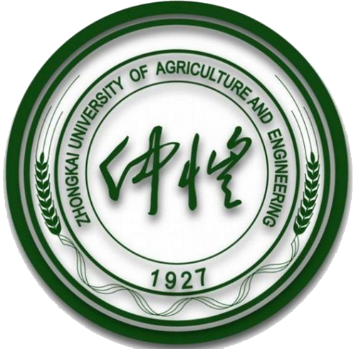

仲恺农业工程学院是一所以农、工学科为优势，农、工、理、经、管、文、艺、法等多学科协调发展的省属本科大学。学校坐落在历史文化名城广州，有海珠、白云两个校区，校园总面积2000余亩。校园集云山之神秀，汇珠水之灵气，是读书治学的理想园地。 学校前身为仲恺农工学校，是第一次国共合作时期，近代民主革命先驱何香凝先生等提议、国民党中央为纪念廖仲恺先生爱护农工的意愿而决定创办的。学校于1927年招生，何香凝先生首任校长15年。1984年，经教育部、农牧渔业部批准，学校升格为本科院校，定名“仲恺农业技术学院”，国家副主席王震同志题写校名。2008年3月，经教育部批准，更名“仲恺农业工程学院”。 为争取社会各界支持办学，促进学校发展，1987年4月，根据国家副主席王震提议，经中共广东省委同意，成立了学校董事会，王震任名誉董事长，广东省省长叶选平任第一届董事会董事长。此后，历届学校董事长均由在任广东省省长担任。董事会成员包含有国家领导人、省部级领导以及港澳知名人士。 学校的建设和发展备受各级领导和社会各界的高度重视与关心。党和国家领导人叶剑英、邓小平、杨尚昆、王震先后为校园内的廖仲恺何香凝纪念馆、廖仲恺铜像、何香凝汉白玉塑像和廖仲恺纪念碑题字。国家主席杨尚昆，全国人大常委会副委员长廖承志、何鲁丽、周铁农，全国政协副主席廖晖、霍英东、马万祺等多次亲临学校视察指导工作。海内外各界人士深怀对廖仲恺、何香凝及其开创事业的崇敬和景仰，不断给予精神和物质上的大力支持，霍英东、马万祺、何厚铧、崔世安、曾宪梓、何鸿燊、杨钊、刘宇新等一批港澳社会贤达为学校捐资兴建实验楼、图书馆、教学楼等，添置教学科研和医疗卫生设备，设立奖教学金，为学校办出特色、办出水平不遗余力。 学校现有高级专业技术职务专任教师450人，拥有硕士学位以上专任教师883人。现有国家十百千万人才工程第二层次人选1人，973首席科学家1人，珠江学者特聘教授1人，青年珠江学者2人，广东省教学名师3人，广东省高校“千百十工程”省级培养对象12人，广东省高校优秀青年教师15人，广州珠江科技新星5人，省级科技创新团队6个。学校图书馆藏书116.63万册，电子图书203.44万册，各种类型数字资源库39个。 学校于2006年1月获得硕士学位授权单位，2009年1月被教育部评为本科教学工作水平评估优秀学校。学校现设有17个二级学院，1个教学部和华南地区最大的雅思考点（IELTS）；拥有博士后科研工作站1个、一级学科硕士学位授权学科9个、硕士专业学位类别5个、本科专业55个（其中，省级以上特色专业9个）。学校面向全国16个省市招生，有全日制本科生、研究生2万余人。 学校拥有省级重点学科4个，珠江学者设岗学科7个，省级重点实验室1个，省级科研平台36个，省级精品课程、精品资源共享课程27门。近年来，获国家自然科学基金项目33项，国家社会科学基金项目4项；获国家科技进步奖二等奖2项，广东省科学技术奖一等奖1项、二等奖3项，农业部、环保部科技奖各1项，广东省哲学社会科学优秀成果奖1项，广东省农业技术推广奖一等奖1项、二等奖8项；通过国家级品种审定2个，通过省级品种审定23个；获得授权专利420项；被SCI/EI/ISTP三大索引收录论文659篇，出版学术专著30多部。 九十多年来，学校为国家经济社会发展培养了一大批优秀人才，其中包括基层农业技术干部、专家、学者以及省部级领导干部，中国工程院院士曾溢滔、原农业部部长陈耀邦等就是其中的杰出代表。 学校先后与英国利物浦大学、诺丁汉大学、布鲁内尔大学、布莱顿大学、爱丁堡龙比亚大学，美国夏威夷大学、威斯康星大学、圣道大学、密苏里大学，加拿大圭尔夫大学，澳洲中央昆士兰大学，新西兰林肯大学、梅西大学，日本创价大学，白俄罗斯国立工业大学，德国富克旺根艺术大学，意大利佛罗伦萨大学等建立了友好互访、人才培养及学术合作关系。 近年来，学校被评为广东省依法治校示范校、安全文明校园、全国暑期“三下乡”社会实践先进单位、全国无偿献血贡献奖金奖单位、广东省回乡大学生开展农业科技下乡活动先进单位、广东省青年志愿服务优秀集体，在人才培养和社会服务方面得到了社会广泛认可。
